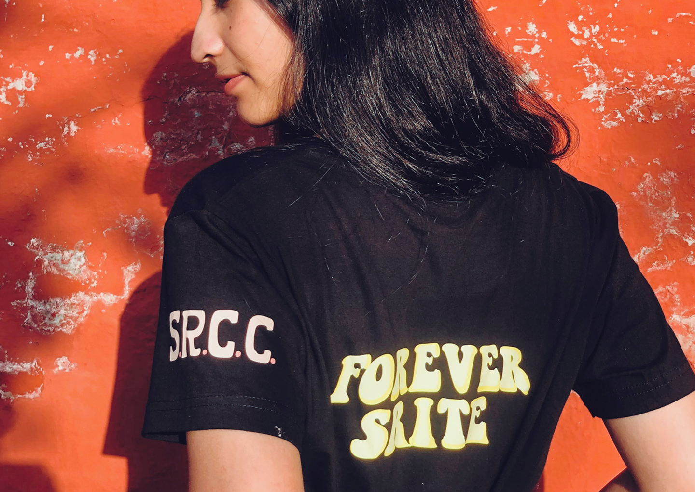

Varsity Memoirs emerged in the midst of a world confined by COVID, a
world where students spent the most defining years of their lives
isolated within four walls. As graduation approached, the thought of
passing out on a random Wednesday, without the customary uproar, was
unsettling. Yet, for countless students who had never even set foot on
campus, the absence of such milestones felt even more profound. With
uncertainty hanging over the future of physical campuses, the desire for
a keepsake—something to commemorate this journey—became paramount.
Thus, Varsity Memoirs was born.
What began as an answer to the need for connection and remembrance grew
into a premium merchandise venture that resonated deeply with students
across Delhi. Its designs, imbued with sentiment, struck a chord and
quickly gained traction. In a year, Varsity Memoirs served over 2,000
orders, partnered with Lady Shri Ram College and DU Beat and grew
totally through organic impressions.

Led by a dedicated team of 15+ students,Varsity’s exposure became a
stepping stone for their career while their contribution led varsity to
grow exponentially in a very small period of time.
Beyond the numbers, Varsity Memoirs became a symbol of resilience—proof
that even in isolation, there remained a way to commemorate the spirit
of college life. The journey, marked by creativity and connection, will
always be cherished.
Varsity.memoirs